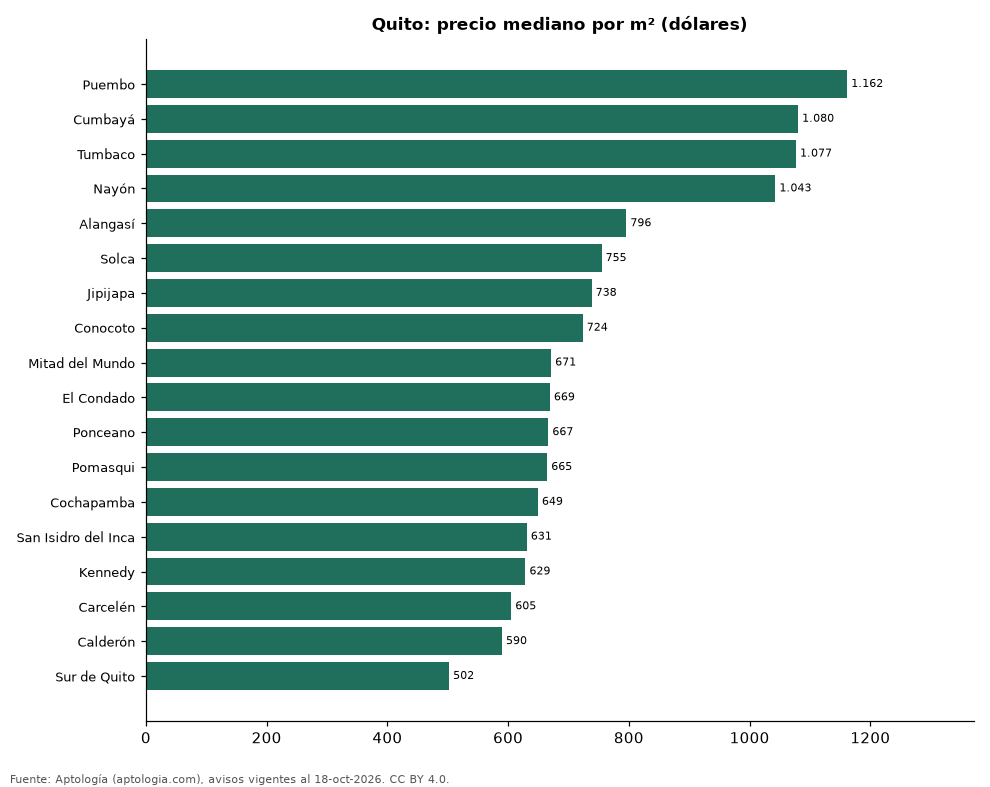

Sectores más caros y más baratos de Quito para comprar casa: ranking por m² (octubre 2026)
Estudio con datos abiertos (CC BY 4.0). Versión original: https://www.aptologia.com/estudios/sectores-con-casas-mas-caras-y-baratas-quito-venta-m2-2026 · DOI: 10.5281/zenodo.23523032
En Quito, el sector con el m² más caro para comprar casa es Puembo (USD 1.162/m²) y el más barato Sur de Quito (USD 502/m²), 2,3 veces menos. Comparamos 18 sectores con al menos 30 avisos con área.
Resumen: analizamos 2.020 casas en venta con área declarada en 18 sectores de Quito.
Actualizado: 18 de octubre de 2026 (datos del 18 de octubre de 2026) · Próxima actualización: mensual.

Resumen
| Indicador | Valor |
|---|---|
| Más caro por m² | Puembo: USD 1.162 |
| Más barato por m² | Sur de Quito: USD 502 |
| Diferencia | 2,3 veces |
| Sectores | 18 |
Ranking de sectores por precio del m²
| Sector | Por m² (mediana) | Precio (mediana) | Área mediana (m²) | Avisos con área |
|---|---|---|---|---|
| Puembo | USD 1.162 | USD 270.000 | 240 | 81 |
| Cumbayá | USD 1.080 | USD 355.000 | 353 | 307 |
| Tumbaco | USD 1.077 | USD 218.000 | 218 | 337 |
| Nayón | USD 1.043 | USD 332.495 | 308 | 94 |
| Alangasí | USD 796 | USD 137.500 | 184 | 89 |
| Solca | USD 755 | USD 199.000 | 300 | 37 |
| Jipijapa | USD 738 | USD 325.000 | 448 | 35 |
| Conocoto | USD 724 | USD 120.000 | 171 | 353 |
| Mitad del Mundo | USD 671 | USD 95.000 | 129 | 52 |
| El Condado | USD 669 | USD 185.000 | 292 | 75 |
| Ponceano | USD 667 | USD 170.000 | 260 | 53 |
| Pomasqui | USD 665 | USD 105.000 | 152 | 65 |
| Cochapamba | USD 649 | USD 135.000 | 287 | 33 |
| San Isidro del Inca | USD 631 | USD 147.500 | 223 | 40 |
| Kennedy | USD 629 | USD 162.000 | 330 | 49 |
| Carcelén | USD 605 | USD 115.000 | 202 | 83 |
| Calderón | USD 590 | USD 77.750 | 133 | 128 |
| Sur de Quito | USD 502 | USD 140.000 | 306 | 109 |
Medianas; solo sectores con 30 avisos o más con área declarada.
Preguntas frecuentes
¿Cuál es el sector más caro de Quito para comprar? Puembo, con USD 1.162 por m² en la mediana (octubre de 2026).
¿Y el más barato? Sur de Quito, con USD 502 por m².
Metodología
- Fuente: exportes nocturnos de la base de datos de Aptología (aptologia.com) del 18 de octubre de 2026: avisos vigentes de vivienda en portales inmobiliarios de 13 países, recogidos por Aptología y vistos en línea entre el 11 y el 18 de octubre de 2026. Corte: 18 de octubre de 2026.
- Depuración: se eliminan duplicados exactos (misma ciudad, zona, tipo, precio, moneda, área, habitaciones y baños) y los precios fuera del percentil 1–99 de cada país, operación, moneda y tipo; el precio por m² usa solo avisos con área declarada entre 12 y 2.000 m² y también se recorta al P1–P99.
- Qué se mide: precios pedidos (publicados), no precios de cierre. En arriendo, el canon mensual sin administración, gastos comunes ni condominio.
- Muestra mínima: cada cifra publicada se apoya en al menos 30 avisos; las celdas con menos se omiten.
- Monedas: nunca se mezclan avisos de monedas distintas sin convertirlos. Conversión a dólares con la tasa de mercado de ExchangeRate-API (open.er-api.com, actualización del 18 Oct 2026): 1 USD = 3.182,80 COP, 1 USD = 18,47 M.N, 1 USD = 5,09 BRL, 1 USD = 3,44 PEN, 1 USD = 982,44 CLP, 1 USD = 1.514,57 ARS, 1 USD = 40,20 UYU, 1 USD = 5.705,37 PYG, 1 USD = 61,27 DOP, 1 USD = 0,89 EUR, 1 USD = 11,72 BOB; la UF chilena a 41.178,64 CLP (mindicador,cl. 18-oct-2026). Los avisos publicados en dólares se usan tal cual.
- Monedas: en cada ciudad y operación se usa solo la moneda mayoritaria de los avisos (los avisos en otra moneda se excluyen) y la mediana se convierte a dólares con la tasa citada; nunca se promedian avisos de monedas distintas.
- Limitaciones: la cobertura depende de los portales que recorre Aptología en cada país y es mayor en las ciudades grandes y en los segmentos medio-alto y alto; el área es la que declara el aviso, sin verificar; los nombres de zona vienen de los portales.
- Privacidad: solo se publican agregados; no se publica ningún dato personal, enlace a avisos ni nombre de anunciante.
- Datos abiertos: datos.csv, licencia CC BY 4.0.
Cómo citar
Pinzón Pineda, D. M. (2026). Sectores más caros y más baratos de Quito para comprar casa: ranking por m² (octubre 2026). Aptología (aptologia.com). https://github.com/elbroker/aptologia-datos/tree/main/estudios/sectores-con-casas-mas-caras-y-baratas-quito-venta-m2-2026. Datos: datos.csv, licencia CC BY 4.0.